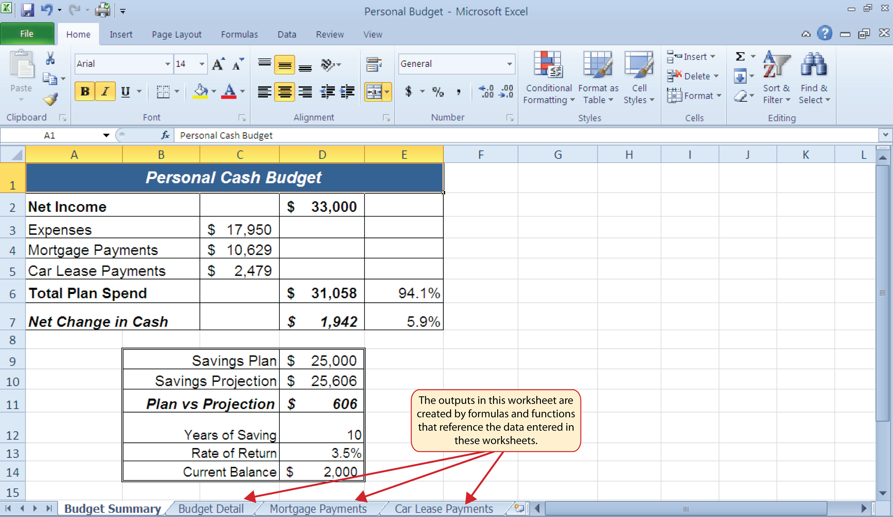
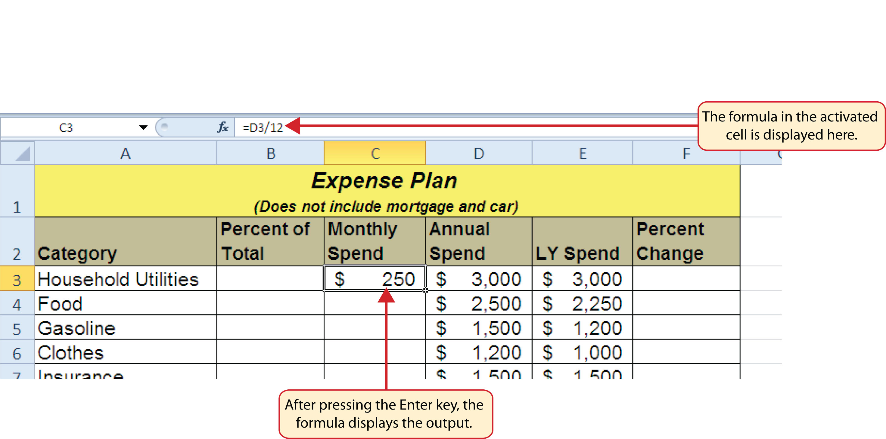
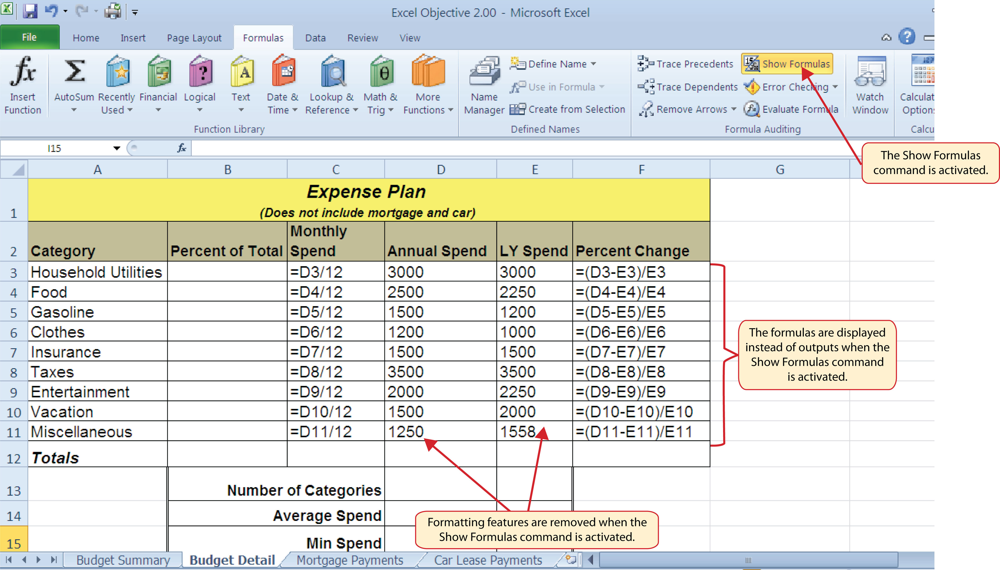
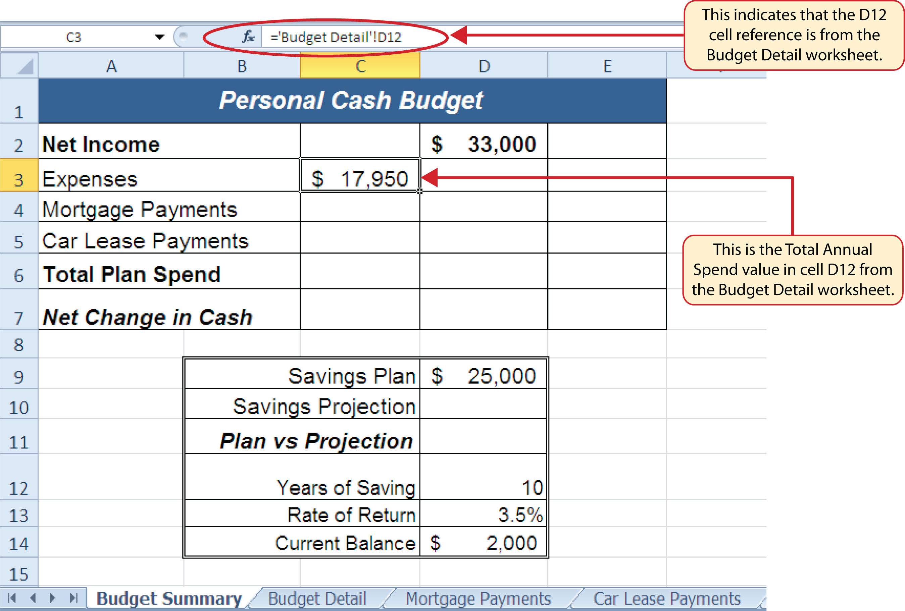
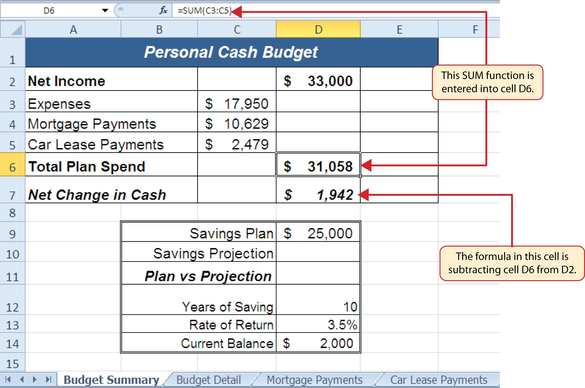
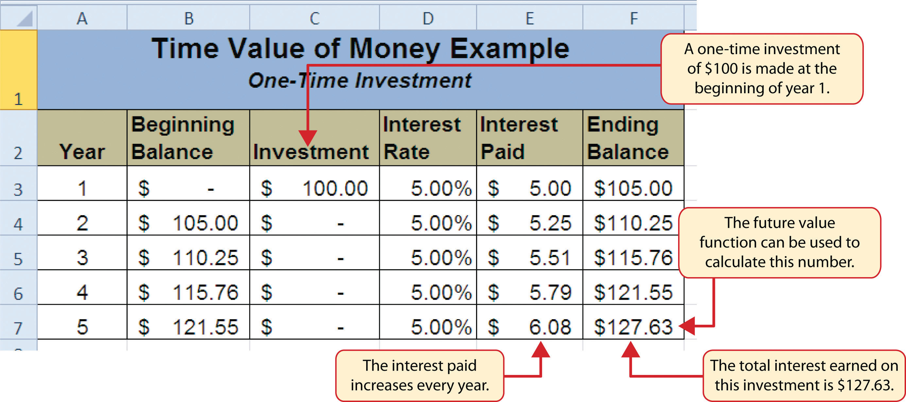
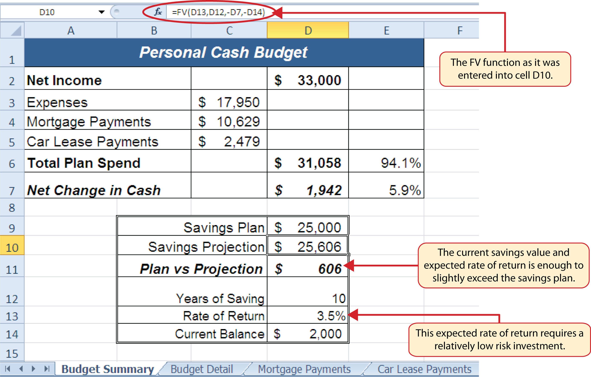
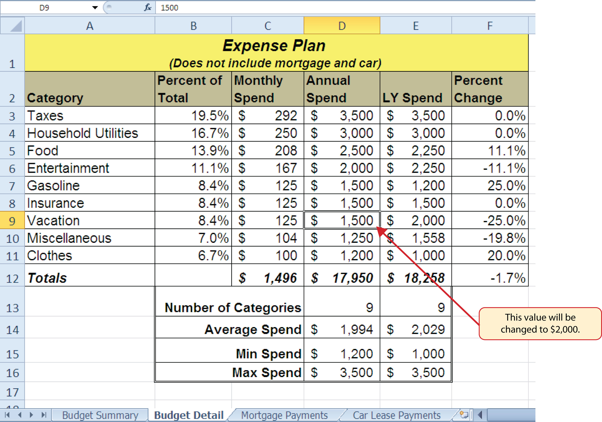
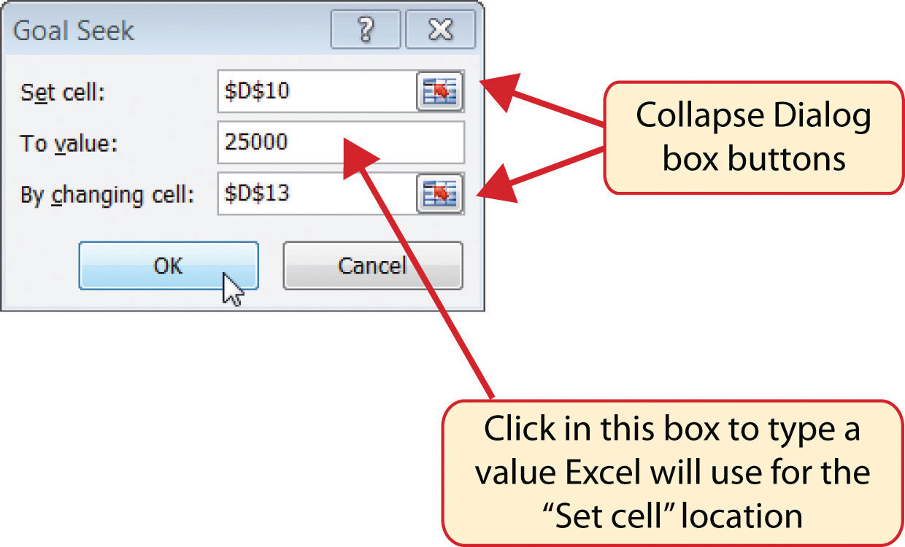
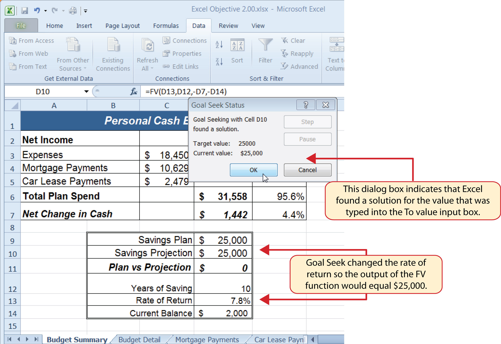

Perhaps the most valuable feature of Excel is its ability to produce mathematical outputs using the data in a workbook. This chapter reviews several mathematical outputs that you can produce in Excel through the construction of formulas and functions. The chapter begins with the construction of formulas for basic and complex mathematical computations. The second section reviews statistical functions, such as SUM, AVERAGE, MIN, and MAX, which can be applied to a range of cells. The last section of the chapter addresses functions used to calculate mortgage and lease payments as well as the valuation of investments. This chapter also shows how you can use data from multiple worksheets to construct formulas and functions. These skills will be demonstrated in the context of a personal cash budget, which is a vital tool for managing your money for long-term financial security. The personal budget objective will also provide you with several opportunities to demonstrate Excel’s what-if scenario capabilities, which highlight how formulas and functions automatically produce new outputs when one or more inputs are changed.
This section reviews the fundamental skills for entering formulas into an Excel worksheet. The objective used for this chapter is the construction of a personal cash budget. Most financial advisors recommend that all households construct and maintain a personal budget to achieve and maintain strong financial health. Organizing and maintaining a personal budget is a skill you can practice at any point in your life. Whether you are managing your expenses during college or maintaining the finances of a family of four, a personal budget can be a vital tool when making financial decisions. Excel can make managing your money a fun and rewarding exercise.
Figure 2.1 "Completed Personal Cash Budget Workbook" shows the completed workbook that will be demonstrated in this chapter. Notice that this workbook contains four worksheets. The first worksheet, Budget Summary, contains formulas that utilize or reference the data in the other three worksheets. As a result, the Budget Summary worksheet serves as an overview of the data that was entered and calculated in the other three worksheets of the workbook.
Figure 2.1 Completed Personal Cash Budget Workbook
Follow-along file: Excel Objective 2.00
FormulasUsed to calculate a variety of mathematical outputs in Excel and can be used to create virtually any custom calculation required for your objective. are used to calculate a variety of mathematical outputs in Excel and can be used to create virtually any custom calculation required for your objective. Furthermore, when constructing a formula in Excel, you use cell locations that, when added to a formula, become cell referencesCell addresses used in formulas. Excel references the values entered into the cell locations used in formulas to produce outputs. When the values are changed in a cell referenced by a formula, Excel automatically produces new outputs. When a cell reference is used by itself in a cell location (cell address preceded by an equal sign [=]), Excel displays the value entered into that cell location.. This means that Excel uses, or references, the number entered into the cell location when calculating a mathematical output. As a result, when the numbers in the cell references are changed, Excel automatically produces a new output. This is what gives Excel the ability to create a variety of what-if scenarios, which will be explained later in the chapter.
To demonstrate the construction of a basic formula, we will begin working on the Budget Detail worksheet in the Personal Budget workbook, which is shown in Figure 2.2 "Budget Detail Worksheet". To complete this worksheet, we will add several formulas and functions. Table 2.1 "Spend Category Definitions" provides definitions for each of the spend categories listed in the range A3:A11. When you develop a personal budget, these categories are defined on the basis of how you spend your money. It is likely that every person could have different categories or define the same categories differently. Therefore, it is important to review the definitions in Table 2.1 "Spend Category Definitions" to understand how we are defining these categories before proceeding.
Figure 2.2 Budget Detail Worksheet

Table 2.1 Spend Category Definitions
| Category | Definition |
|---|---|
| Household Utilities | Money spent on electricity, heat, and water and on cable, phone, and Internet access |
| Food | Money spent on groceries, toiletries, and related items |
| Gasoline | Money spent on fuel for automobiles |
| Clothes | Money spent on clothes, shoes, and accessories |
| Insurance | Money spent on homeowner’s or automobile insurance |
| Taxes | Money spent on school and property taxes (this example of the personal budget assumes that we own property). |
| Entertainment | Money spent on entertainment, including dining out, movie and theater tickets, parties, and so on |
| Vacation | Money spent on vacations |
| Miscellaneous | Includes any other spending categories, such as textbooks, software, journals, school or work supplies, and so on |
The first formula that we will add to the Budget Detail worksheet will calculate the Monthly Spend values. The formula will be constructed so that it takes the values in the Annual Spend column and divides them by 12. This will show how much money will be spent per month for each of the categories listed in Column A. The following explains how this formula is created:
Table 2.2 Excel Mathematical Operators
| Symbol | Operation |
|---|---|
| + | Addition |
| − | Subtraction |
| / | Division |
| * | Multiplication |
| ^ | Power/Exponent |
Use Cell References
Cell references enable Excel to dynamically produce new outputs when one or more inputs in the referenced cells are changed. Cell references also allow you to trace how outputs are being calculated in a formula. As a result, you should never use a calculator to determine a mathematical output and type it into the cell location of a worksheet. Doing so eliminates Excel’s cell-referencing benefits as well as your ability to trace a formula to determine how outputs are being produced.
Figure 2.3 "Adding a Formula to a Worksheet" shows how the formula appears in cell C3 before you press the ENTER key. Figure 2.4 "Formula Output for Monthly Spend" shows the output of the formula after you press the ENTER key. The monthly spend for Household Utilities is $250 because the formula is taking the Annual Spend in cell D3 and dividing it by 12. If the value in cell D3 is changed, the formula automatically produces a new output. We are calculating the spend per month for each category because people often get paid and are billed for these items on a monthly basis. This formula allows you to compare your monthly income to your monthly bills to determine whether you have enough income to pay these expenses.
Figure 2.3 Adding a Formula to a Worksheet

Figure 2.4 Formula Output for Monthly Spend
Use Universal Constants
If you are using constants, or numerical values, in an Excel formula, they should be universal constants that do not change, such as the number of days in a week, weeks in a year, and so on. Do not type the values that exist in cell locations into an Excel formula. This will eliminate Excel’s cell-referencing benefits, which means if the value in the cell location you are using in a formula is changed, Excel will not be able to produce a new output.
Follow-along file: Continue with Excel Objective 2.00. (Use file Excel Objective 2.01 if starting here.)
Once a formula is typed into a worksheet, it can be copied and pasted to other cell locations. For example, Figure 2.4 "Formula Output for Monthly Spend" shows the output of the formula that was entered into cell C3. However, this calculation needs to be performed for the rest of the cell locations in Column C. Since we used the D3 cell reference in the formula, Excel automatically adjusts that cell reference when the formula is copied and pasted into the rest of the cell locations in the column. This is called relative referencingExcel automatically adjusts a cell reference used in a formula or function relative to its original location when it is pasted into new cell locations. and is demonstrated as follows:
Figure 2.5 "Relative Reference Example" shows the outputs added to the rest of the cell locations in the Monthly Spend column. For each row, the formula takes the value in the Annual Spend column and divides it by 12. You will also see that cell D6 has been double clicked to show the formula. Notice that Excel automatically changed the original cell reference of D3 to D6. This is the result of relative referencing, which means Excel automatically adjusts a cell reference relative to its original location when it is pasted into new cell locations. In this example, the formula was pasted into eight cell locations below the original cell location. As a result, Excel increased the row number of the original cell reference by a value of one for each row it was pasted into.
Figure 2.5 Relative Reference Example

Use Relative Referencing
Relative referencing is a convenient feature in Excel. When you use cell references in a formula, Excel automatically adjusts the cell references when the formula is pasted into new cell locations. If this feature were not available, you would have to manually retype the formula when you want the same calculation applied to other cell locations in a column or row.
Follow-along file: Continue with Excel Objective 2.00. (Use file Excel Objective 2.02 if starting here.)
The next formula to be added to the Personal Budget workbook is the percent change over last year. This formula determines the difference between the values in the LY (Last Year) Spend column and shows the difference in terms of a percentage. This requires that the order of mathematical operations be controlled to get an accurate result. Table 2.3 "Standard Order of Mathematical Operations" shows the standard order of operations for a typical formula. To change the order of operations shown in the table, we use parentheses to process certain mathematical calculations first. This formula is added to the worksheet as follows:
Table 2.3 Standard Order of Mathematical Operations
| Symbol | Order |
|---|---|
| ^ | First: Excel executes any exponential computations first. |
| * or / | Second: Excel performs any multiplication or division computations second. When there are multiple instances of these computations in a formula, they are executed in order from left to right. |
| + or − | Third: Excel performs any addition or subtraction computations third. When there are multiple instances of these computations in a formula, they are executed in order from left to right. |
| ( ) | Override Standard Order: Any mathematical computations placed in parentheses are performed first and override the standard order of operations. If there are layers of parentheses used in a formula, Excel computes the innermost parentheses first and the outermost parentheses last. |
Figure 2.6 "Adding the Percent Change Formula" shows the formula that was added to the Budget Detail worksheet to calculate the percent change in spending. The parentheses were added to this formula to control the order of operations. Any mathematical computations placed in parentheses are executed first before the standard order of mathematical operations (see Table 2.3 "Standard Order of Mathematical Operations"). In this case, if parentheses were not used, Excel would produce an erroneous result for this worksheet.
Figure 2.6 Adding the Percent Change Formula

Figure 2.7 "Removing the Parentheses from the Percent Change Formula" shows the result of the percent change formula if the parentheses are removed. The formula produces a result of a 299900% increase. Since there is no change between the LY spend and the budget Annual Spend, the result should be 0%. However, without the parentheses, Excel is following the standard order of operations. This means the value in cell E3 will be divided by E3 first (3,000/3,000), which is 1. Then, the value of 1 will be subtracted from the value in cell D3 (3,000−1), which is 2,999. Since cell F3 is formatted as a percentage, Excel expresses the output as an increase of 299900%.
Figure 2.7 Removing the Parentheses from the Percent Change Formula

Does the Output of Your Formula Make Sense?
It is important to note that the accuracy of the output produced by a formula depends on how it is constructed. Therefore, always check the result of your formula to see whether it makes sense with data in your worksheet. As shown in Figure 2.7 "Removing the Parentheses from the Percent Change Formula", a poorly constructed formula can give you an inaccurate result. In other words, you can see that there is no change between the Annual Spend and LY Spend for Household Utilities. Therefore, the result of the formula should be 0%. However, since the parentheses were removed in this case, the formula is clearly producing an erroneous result.
Follow-along file: Continue with Excel Objective 2.00. (Use file Excel Objective 2.03 if starting here.)
Excel provides a few tools that you can use to review the formulas entered into a worksheet. For example, instead of showing the outputs for the formulas used in a worksheet, you can have Excel show the formula as it was entered in the cell locations. This is demonstrated as follows:
Figure 2.8 "Show Formulas Command" shows the Budget Detail worksheet after activating the Show Values command in the Formulas tab of the Ribbon. As shown in the figure, this command allows you to view and check all the formulas in a worksheet without having to click each cell individually. After activating this command, the column widths in your worksheet increase significantly. The column widths were adjusted for the worksheet shown in Figure 2.8 "Show Formulas Command" so all columns can be seen. The column widths return to their previous width when the Show Formulas command is deactivated.
Figure 2.8 Show Formulas Command
Show Formulas
Two other tools in the Formula Auditing group of commands are the Trace Precedents and Trace Dependents commands. These commands are used to trace the cell references used in a formula. The Trace Dependents command shows where any given cell is referenced in a formula. The Trace Precedents command shows what cells have been referenced in a formula that exists in an activated cell. The following is a demonstration of these commands:
Figure 2.9 "Trace Dependents Example" shows the Trace Dependents arrow on the Budget Detail worksheet. The blue dot represents the activated cell. The arrows indicate where the cell is referenced in formulas.
Figure 2.9 Trace Dependents Example

Figure 2.10 "Trace Precedents Example" shows the Trace Precedents arrow on the Budget Detail worksheet. The blue dots on this arrow indicate the cells that are referenced in the formula contained in the activated cell. The arrow is pointing to the activated cell location that contains the formula.
Figure 2.10 Trace Precedents Example

Which of the following terms best describes how Excel is able to change the outputs of formulas and functions when one or more inputs are changed?
Which of the following best describes the proper use of numbers when constructing formulas in Excel?
Which of the following will be calculated first in the formula =((C10−D2)*A9)+B5*C5?
Which of the following formula auditing features would you use if you wanted to see where a specific cell location was referenced in formulas entered into a worksheet?
In addition to formulas, another way to conduct mathematical computations in Excel is through functions. Statistical functions apply a mathematical process to a group of cells in a worksheet. For example, the SUM function is used to add the values contained in a range of cells. A list of commonly used statistical functions is shown in Table 2.4 "Commonly Used Statistical Functions". Functions are more efficient than formulas when you are applying a mathematical process to a group of cells. If you use a formula to add the values in a range of cells, you would have to add each cell location to the formula one at a time. This can be very time-consuming if you have to add the values in a few hundred cell locations. However, when you use a function, you can highlight all the cells that contain values you wish to sum in just one step. This section demonstrates a variety of statistical functions that we will add to the Personal Budget workbook. In addition to demonstrating functions, this section also reviews percent of total calculations and the use of absolute references.
Table 2.4 Commonly Used Statistical Functions
| Function | Output |
|---|---|
| ABS | The absolute value of a number |
| AVERAGE | The average or arithmetic mean for a group of numbers |
| COUNT | The number of cell locations in a range that contain a numeric character |
| COUNTA | The number of cell locations in a range that contain a text or numeric character |
| MAX | The highest numeric value in a group of numbers |
| MEDIAN | The middle number in a group of numbers (half the numbers in the group are higher than the median and half the numbers in the group are lower than the median) |
| MIN | The lowest numeric value in a group of numbers |
| MODE | The number that appears most frequently in a group of numbers |
| PRODUCT | The result of multiplying all the values in a range of cell locations |
| SQRT | The positive square root of a number |
| STDEV.S | The standard deviation for a group of numbers based on a sample |
| SUM | The total of all numeric values in a group |
Follow-along file: Continue with Excel Objective 2.00. (Use file Excel Objective 2.03 if starting here.)
The SUM function is used when you need to calculate totals for a range of cells or a group of selected cells on a worksheet. With regard to the Budget Detail worksheet, we will use the SUM function to calculate the totals in row 12. It is important to note that there are several methods for adding a function to a worksheet, which will be demonstrated throughout the remainder of this chapter. The following illustrates how a function can be added to a worksheet by typing it into a cell location:
Figure 2.11 "Adding the SUM Function to the Budget Detail Worksheet" shows the appearance of the SUM function added to the Budget Detail worksheet before pressing the ENTER key.
Figure 2.11 Adding the SUM Function to the Budget Detail Worksheet
As shown in Figure 2.11 "Adding the SUM Function to the Budget Detail Worksheet", the SUM function was added to cell C12. However, this function is also needed to calculate the totals in the Annual Spend and LY Spend columns. The function can be copied and pasted into these cell locations because of relative referencing. Relative referencing serves the same purpose for functions as it does for formulas. The following demonstrates how the total row is completed:
Figure 2.12 "Results of the SUM Function in the Budget Detail Worksheet" shows the output of the SUM function that was added to cells C12, D12, and E12. In addition, the percent change formula was copied and pasted into cell F12. Notice that this version of the budget is planning a 1.7% decrease in spending compared to last year.
Figure 2.12 Results of the SUM Function in the Budget Detail Worksheet

Cell Ranges in Statistical Functions
When you intend to use a statistical function on a range of cells in a worksheet, make sure there are two cell locations separated by a colon and not a comma. If you enter two cell locations separated by a comma, the function will produce an output but it will be applied to only two cell locations instead of a range of cells. For example, the SUM function shown in Figure 2.13 "SUM Function Adding Two Cell Locations" will add only the values in cells C3 and C11, not the range C3:C11.
Figure 2.13 SUM Function Adding Two Cell Locations

Follow-along file: Continue with Excel Objective 2.00. (Use file Excel Objective 2.04 if starting here.)
Since totals were added to row 12 of the Budget Detail worksheet, a percent of total calculation can be added to Column B beginning in cell B3. The percent of total calculation shows the percentage for each value in the Annual Spend column with respect to the total in cell D12. However, after the formula is created, it will be necessary to turn off Excel’s relative referencing feature before copying and pasting the formula to the rest of the cell locations in the column. Turning off Excel’s relative referencing feature is accomplished through an absolute reference. The following steps explain how this is done:
Figure 2.14 Adding a Formula to Calculate the Percent of Total
Figure 2.14 "Adding a Formula to Calculate the Percent of Total" shows the completed formula that is calculating the percentage that Household Utilities Annual Spend represents to the total Annual Spend for the budget (see cell B3). Normally, we would copy this formula and paste it into the range B4:B11. However, because of relative referencing, both cell references will increase by one row as the formula is pasted into the cells below B3. This is fine for the first cell reference in the formula (D3) but not for the second cell reference (D12). Figure 2.15 "#DIV/0 Error from Relative Referencing" illustrates what happens if we paste the formula into the range B4:B12 in its current state. Notice that Excel produces the #DIV/0Error code displayed in a cell containing a formula or function that is trying to divide by zero. error code. This means that Excel is trying to divide a number by zero, which is impossible. Looking at the formula in cell B4, you see that the first cell reference was changed from D3 to D4. This is fine because we now want to divide the Annual Spend for Insurance by the total Annual Spend in cell D12. However, Excel has also changed the D12 cell reference to D13. Because cell location D13 is blank, the formula produces the #DIV/0 error code.
Figure 2.15 #DIV/0 Error from Relative Referencing

To eliminate the divide-by-zero error shown in Figure 2.15 "#DIV/0 Error from Relative Referencing", we must add an absolute reference to cell D12 in the formula. An absolute referencePrevents Excel from using relative referencing to change a cell reference used in a formula or function; an absolute reference is applied to a cell reference by typing a dollar sign ($) in front of the column letter and row number. prevents relative referencing from changing a cell reference in a formula. This is also referred to as locking a cell. The following explains how this is accomplished:
Figure 2.16 "Adding an Absolute Reference to a Cell Reference in a Formula" shows the percent of total formula with an absolute reference added to D12. Notice that in cell B4, the cell reference remains D12 instead of changing to D13 as shown in Figure 2.15 "#DIV/0 Error from Relative Referencing". Also, you will see that the percentages are being calculated in the rest of the cells in the column, and the divide-by-zero error is now eliminated.
Figure 2.16 Adding an Absolute Reference to a Cell Reference in a Formula
Follow-along file: Continue with Excel Objective 2.00. (Use file Excel Objective 2.05 if starting here.)
The next function that we will add to the Budget Detail worksheet is the COUNT function. The COUNT function is used to determine how many cells in a range contain a numeric entry. For the Budget Detail worksheet, we will use the COUNT function to count the number of items that are planned in the Annual Spend column (Column D). The following explains how the COUNT function is added to the worksheet by using the function list:
Figure 2.17 "Using the Function List to Add the COUNT Function" shows the function list box that appears after completing steps 2 and 3 for the COUNT function. The function list provides an alternative method for adding a function to a worksheet.
Figure 2.17 Using the Function List to Add the COUNT Function
Figure 2.18 "Completed COUNT Function in the Budget Detail Worksheet" shows the output of the COUNT function after pressing the ENTER key. The function counts the number of cells in the range D3:D11 that contain a numeric value. The result of 9 indicates that there are 9 categories planned for this budget.
Figure 2.18 Completed COUNT Function in the Budget Detail Worksheet
Follow-along file: Continue with Excel Objective 2.00. (Use file Excel Objective 2.06 if starting here.)
The next function we will add to the Budget Detail worksheet is the AVERAGE function. This function is used to calculate the arithmetic mean for a group of numbers. For the Budget Detail worksheet, we will use the function to calculate the average of the values in the Annual Spend column. We will add this to the worksheet by using the Function Library. The following steps explain how this is accomplished:
Figure 2.19 "Selecting the AVERAGE Function from the Function Library" illustrates how a function is selected from the Function Library in the Formulas tab of the Ribbon.
Figure 2.19 Selecting the AVERAGE Function from the Function Library

Figure 2.20 "Function Arguments Dialog Box" shows the Function Arguments dialog box. This appears after a function is selected from the Function Library. The Collapse Dialog button is used to hide the dialog box so a range of cells can be highlighted on the worksheet and then added to the function.
Figure 2.20 Function Arguments Dialog Box

Figure 2.21 "Selecting a Range from the Function Arguments Dialog Box" shows how a range of cells can be selected from the Function Arguments dialog box once it has been collapsed.
Figure 2.21 Selecting a Range from the Function Arguments Dialog Box

Figure 2.22 "Function Arguments Dialog Box after a Cell Range Is Defined for a Function" shows the Function Arguments dialog box after the cell range is defined for the AVERAGE function. The dialog box shows the result of the function before it is added to the cell location. This allows you to assess the function output to determine whether it makes sense before adding it to the worksheet.
Figure 2.22 Function Arguments Dialog Box after a Cell Range Is Defined for a Function
Figure 2.23 "Completed AVERAGE Function" shows the completed AVERAGE function in the Budget Detail worksheet. The output of the function shows that on average we expect to spend $1,994 for each of the categories listed in Column A of the budget. This average spend calculation per category can be used as an indicator to determine which categories are costing more or less than the average budgeted spend dollars.
Figure 2.23 Completed AVERAGE Function
Follow-along file: Continue with Excel Objective 2.00. (Use file Excel Objective 2.07 if starting here.)
The final two statistical functions that we will add to the Budget Detail worksheet are the MAX and MIN functions. These functions identify the highest and lowest values in a range of cells. The following steps explain how to add these functions to the Budget Detail worksheet:
Figure 2.24 MIN Function Added to the Budget Detail Worksheet
Figure 2.25 MAX Function Added to the Budget Detail Worksheet
Follow-along file: Continue with Excel Objective 2.00. (Use file Excel Objective 2.08 if starting here.)
As shown in Figure 2.25 "MAX Function Added to the Budget Detail Worksheet", the COUNT, AVERAGE, MIN, and MAX functions are summarizing the data in the Annual Spend column. You will also notice that there is space to copy and paste these functions under the LY Spend column. This allows us to compare what we spent last year and what we are planning to spend this year. Normally, we would simply copy and paste these functions into the range E13:E16. However, you may have noticed the double-line style border that was used around the perimeter of the range B13:E16. If we used the regular Paste command, the double line on the right side of the range E13:E16 would be replaced with a single line. Therefore, we are going to use one of the Paste Special commands to paste only the functions without any of the formatting treatments. This is accomplished through the following steps:
Figure 2.26 "Paste Formulas Option" shows the list of buttons that appear when you click the down arrow below the Paste button in the Home tab of the Ribbon. One thing to note about these options is that you can preview them before you make a selection by dragging the mouse pointer over the options. As shown in the figure, when the mouse pointer is placed over the Formulas button, you can see how the functions will appear before making a selection. Notice that the double-line border does not change when this option is previewed. That is why this selection is made instead of the regular Paste option.
Figure 2.26 Paste Formulas Option
Follow-along file: Continue with Excel Objective 2.00. (Use file Excel Objective 2.09 if starting here.)
The Budget Detail worksheet shown in Figure 2.26 "Paste Formulas Option" is now producing several mathematical outputs through formulas and functions. The outputs allow you to analyze the details and identify trends as to how money is being budgeted and spent. Before we draw some conclusions from this worksheet, we will sort the data based on the Percent of Total column. As mentioned in Chapter 1 "Fundamental Skills", sorting is a powerful tool that enables you to analyze key trends in any data set. We demonstrated the process of executing a single-level sort in Chapter 1 "Fundamental Skills". For the purposes of the Budget Detail worksheet, we need to set multiple levels for the sort order. This is accomplished through the following steps:
Click the Sort button in the Sort & Filter group of commands. This opens the Sort dialog box, as shown in Figure 2.27 "Sort Dialog Box".
Figure 2.27 Sort Dialog Box

Figure 2.28 "Budget Detail Worksheet after Sorting" shows the Budget Detail worksheet after it has been sorted. Notice that there are three identical values in the Percent of Total column. This is why a second sort level had to be created for this worksheet. The second sort level arranges the values of 8.4% based on the values in the LY Spend column in ascending order. Excel gives you the option to set as many sort levels as necessary for the data contained in a worksheet.
Figure 2.28 Budget Detail Worksheet after Sorting
Now that the Budget Detail worksheet is sorted, a few key trends can be easily identified. The worksheet clearly shows that the top three categories as a percentage of total budgeted spending for the year are Taxes, Household Utilities, and Food. All three categories are necessities (or realities) of life and typically require a significant amount of income for most households. Looking at the Percent Change column, we can see how our planned spending is expected to change from last year. This is perhaps the most import column on the worksheet because it allows you to assess whether your plan is realistic. You will see that there are no changes planned for Taxes and Household Utilities. While Taxes can change from year to year, it is not too difficult to predict what they will be. In this case, we are assuming that there are no changes to the tax costs for our budget. We are also planning no change in Household Utilities. These costs can fluctuate from year to year as well. However, you can take measures to reduce costs, such as using less electricity, turning off heat when no one is in the house, keeping track of your wireless minutes so you do not go over the maximum allowed in your plan, and so on. As a result, there is no change in planned spending for Household Utilities because we will assume that any rate increases will be offset with a decrease in usage. The third item that is planned not to change is Insurance. Insurance policies for cars and homes can change, but as is true for taxes, the changes are predictable. Therefore, we are assuming no changes in our insurance policy.
The first big change that is noticeable in the worksheet is the Food and Entertainment categories in rows 5 and 6 (see definitions in Table 2.1 "Spend Category Definitions"). The Percent Change column indicates that there is an 11.1% decrease in Entertainment spending and an 11.1% increase in Food spending. This is logical because if you plan to eat in restaurants less frequently, you will be eating at home more frequently. Although this makes sense in theory, it may be hard to do in practice. Dinners and parties with friends may be tough to turn down. However, the entire process of maintaining a budget is based on discipline, and it certainly takes a significant amount of discipline to plan targets for yourself and stick to them.
A few other points to note are the changes in the Gasoline and Vacation categories. If you commute to school or work, the price of gas can have a significant impact on your budget. It is important to be realistic if gas prices are increasing, and you should reflect these increases in your budget. To compensate for the increased spending for gas, the spending plan for vacations has been reduced by 25%. Budgeting often requires a certain degree of creativity. Although the Vacation budget has been reduced, there is still money you can set aside to make plans for spring break or winter break.
Finally, the budget shows a decrease in Miscellaneous spending of 19.8%. This was defined as a group containing several expenses, such as textbooks, school supplies, software updates, and so on (see Table 2.1 "Spend Category Definitions"). You may be able to reduce your spending in this category if you can use items such as online textbooks. This reduction in spending can free up funds for Clothes, a spend category that has increased by 20%. We will continue to develop the Personal Budget workbook further in Section 2.3 "Functions for Personal Finance".
In the formula =C2/$C$24, the dollar signs used in the C24 cell reference indicate:
Which statement best explains how the following function will produce a result =AVERAGE(B1,B10)?
Which of the following best explains the purpose of the Paste Formulas command?
Which of the following explains how data in a worksheet can be sorted if the primary column of data contains several duplicate values?
In this section, we continue to develop the Personal Budget workbook. Notable items that are missing from the Budget Detail worksheet are the payments you might make for a car or a home. In addition, you may want to set and track a savings goal. This section demonstrates Excel functions used to calculate lease payments for a car, to calculate mortgage payments for a house, and to project future savings based on regular contributions and an average rate of return. This section also discusses the scenario capabilities of Excel once the Personal Budget workbook is complete.
Follow-along file: Continue with Excel Objective 2.00. (Use file Excel Objective 2.10 if starting here.)
One of the functions we will add to the Personal Budget workbook is the PMT function. This function calculates the payments required for a loan or a lease. However, before demonstrating this function, it is important to cover a few fundamental concepts on loans and leases.
A loanA contractual agreement in which money is borrowed from a lender and paid back over a specific period of time. is a contractual agreement in which money is borrowed from a lender and paid back over a specific period of time. The amount of money that is borrowed from the lender is called the principalThe amount of money borrowed from a lender. of the loan. The borrower is usually required to pay the principal of the loan plus interest. When you borrow money to buy a house, the loan is referred to as a mortgageA loan used to purchase a home or property.. This is because the house being purchased also serves as collateral to ensure payment. In other words, the bank can take possession of your house if you fail to make loan payments. As shown in Table 2.5 "Key Terms for Loans and Leases", there are several key terms related to loans and leases.
Table 2.5 Key Terms for Loans and Leases
| Term | Definition |
|---|---|
| Collateral | Any item of value that is used to secure a loan to ensure payments to the lender |
| Down Payment | The amount of cash paid toward the purchase of a house. If you are paying 20% down, you are paying 20% of the cost of the house in cash and are borrowing the rest from a lender. |
| Interest Rate | The interest that is charged to the borrower as a cost for borrowing money |
| Mortgage | A loan where property is put up for collateral |
| Principal | The amount of money that has been borrowed |
| Residual Value | The estimated selling price of a vehicle at a future point in time |
| Terms | The amount of time you have to repay a loan |
Figure 2.29 "Example of an Amortization Table" shows an example of an amortization tableA schedule of payments broken down by interest and principal for a loan. By law, a lender is required to provide an amortization table to a borrower. for a loan. A lender is required by law to provide borrowers with an amortization table when a loan contract is offered. The table in the figure shows how the payments of a loan would work if you borrowed $100,000 from a lender and agreed to pay it back over 10 years at an interest rate of 5%. You will notice that each time you make a payment, you are paying the bank an interest fee plus some of the loan principal. Each year the amount of interest paid to the bank decreases and the amount of money used to pay off the principal increases. This is because the bank is charging you interest on the amount of principal that has not been paid. As you pay off the principal, the interest rate is applied to a lower number, which reduces your interest charges. Finally, the figure shows that the sum of the values in the Interest Payment column is $29,505. This is how much it costs you to borrow this money over 10 years. Indeed, borrowing money is not free. It is important to note that to simplify this example, the payments were calculated on an annual basis. However, most loan payments are made on a monthly basis.
Figure 2.29 Example of an Amortization Table

A leaseA contract in which the lessee uses an asset such as a car or a piece of equipment and agrees to make regular payments to the owner or the lessor. The lessee is often required to return the leased asset to the lessor at the conclusion of the lease contract. is a contract in which you, the lessee, use an asset such as a car or a piece of equipment and you agree to make regular payments to the owner or the lessor. When you lease a car, the manufacturer or a leasing company retains ownership of the vehicle and you agree to make regular payments for a specific period of time. The amount of money you pay depends on the price of the car, the terms of the lease contract, and the car’s expected residual value at the end of the lease. The calculation of lease payments is similar to the calculation of loan payments. However, when you lease a car, you pay only the value of the car that is used. For example, suppose you are leasing a car that is priced at $25,000. The lease contract is for 4 years at an interest rate of 5%. The residual value of the car is $10,000. This means the car will lose $15,000 of its value over 4 years. Another way to state this is that the car will depreciate $15,000. A lease will be structured so that you pay this $15,000 in depreciation. However, the interest charges will be based on the purchase price of $25,000. We will look at a demonstration of leasing a car as well as buying a home in the next section.
Follow-along file: Continue with Excel Objective 2.00. (Use file Excel Objective 2.10 if starting here.)
If you own a home, your mortgage payments are a major component of your household budget. If you are planning to buy a home, having a clear understanding of your monthly payments is critical for maintaining strong financial health. In Excel, mortgage payments are conveniently calculated through the PMT (payment) function. This function is more complex than the statistical functions covered in Section 2.2 "Statistical Functions". With statistical functions, you are required to add only a range of cells or selected cells within the parentheses of the function. With the PMT function, you must accurately define a series of arguments in order for the function to produce a reliable output. Table 2.6 "Arguments for the PMT Function" lists the arguments for the PMT function. It is helpful to review the key loan and lease terms in Table 2.5 "Key Terms for Loans and Leases" before reviewing the PMT function arguments.
Table 2.6 Arguments for the PMT Function
| Argument | Definition |
|---|---|
| Rate | This is the interest rate the lender is charging the borrower. The interest rate is usually quoted in annual terms, so you have to divide this rate by 12 if you are calculating monthly payments. |
| Nper | The argument letters stand for number of periods. This is the term of the loan, which is the amount of time you have to repay the bank. This is usually quoted in years, so you have to multiply the years by 12 if you are calculating monthly payments. |
| Pv | The argument letters stand for present value. This is the principal of the loan or the amount of money that is borrowed. When defining this argument, a minus sign must precede the cell location or value. For leases, this argument is used for the price of the item being leased. |
| [Fv] | The argument letters stand for future value. The brackets around the argument indicate that it is not always necessary to define it. It is used if there is a lump-sum payment that will be made at the end of the loan terms. This is also used for the residual value of a lease. If it is not defined, Excel will assume that it is zero. |
| [Type] | This argument can be defined with either a 1 or a 0. The number 1 is used if payments are made at the beginning of each period. A 0 is used if payments are made at the end of each period. The argument is in brackets because it does not have to be defined if payments are made at the end of each period. Excel assumes that this argument is 0 if it is not defined. |
We will use the PMT function in the Personal Budget workbook to calculate the monthly mortgage payments for a house. These calculations will be made in the Mortgage Payments worksheet and then displayed in the Budget Summary worksheet through a cell reference link. So far we have demonstrated several methods for adding functions to a worksheet. The following steps explain a new method using the Insert Function command for adding the PMT function:
Click the Insert Function button (see Figure 2.30 "Mortgage Payments Worksheet"). This opens the Insert Function dialog box, which can be used for searching all functions in Excel.
Figure 2.30 Mortgage Payments Worksheet

Click the OK button at the lower right side of the Insert Function dialog box. This will open the Function Arguments dialog box.
Figure 2.31 Insert Function Dialog Box

Insert Function
Function Arguments Dialog Box
Figure 2.32 "Function Arguments Dialog Box for the PMT Function" shows the completed Function Arguments dialog box for the PMT function. Notice that the dialog box shows the values for the Rate and Nper arguments. The Rate is divided by 12 to convert the annual interest rate to a monthly interest rate. The Nper argument is multiplied by 12 to convert the terms of the loan from years to months. Finally, the dialog box provides you with a definition for each argument. The definition appears when you click in the input box for the argument.
Figure 2.32 Function Arguments Dialog Box for the PMT Function

Comparable Arguments for PMT and FV Functions
When using functions such as PMT or FV, make sure the arguments are defined in comparable terms. For example, if you are calculating the monthly payments of a loan, make sure both the Rate and Nper argument are expressed in terms of months. The function will produce an erroneous result if one argument is expressed in years while the other is expressed in months.
Figure 2.33 "Mortgage Payments Worksheet with the PMT Function" shows the final appearance of the Mortgage Payments worksheet after the PMT function is added. The result of the function in cell B5 will be displayed in the Budget Summary worksheet.
Figure 2.33 Mortgage Payments Worksheet with the PMT Function

Follow-along file: Continue with Excel Objective 2.00. (Use file Excel Objective 2.11 if starting here.)
In addition to calculating the mortgage payments for a home, the PMT function will be used in the Personal Budget workbook to calculate the lease payments for a car. The details for the lease payments are found in the Car Lease Payments worksheet. Similar to the statistical functions, we can type the PMT function directly into a cell. However, you must know the definitions for each argument of the function and understand how these arguments need to be defined based on your objective. The terms for loans and leases are in Table 2.5 "Key Terms for Loans and Leases", and the definitions for the arguments of the PMT function are in Table 2.6 "Arguments for the PMT Function". The following steps explain how the PMT function is added to the Personal Budget workbook to calculate the lease payments for a car:
Figure 2.34 "PMT Function Constructed to Calculate Lease Payments" shows how the PMT function should appear before pressing the ENTER key. Notice the commas that separate each argument of the function. Also, the tip box will show the current argument being defined in bold font.
Figure 2.34 PMT Function Constructed to Calculate Lease Payments

Figure 2.35 "Results of the PMT Function in the Car Lease Payments Worksheet" shows the result of the PMT function. The monthly payments for this lease are $206.56. This monthly payment will be displayed in the Budget Summary worksheet.
Figure 2.35 Results of the PMT Function in the Car Lease Payments Worksheet

Follow-along file: Continue with Excel Objective 2.00. (Use file Excel Objective 2.12 if starting here.)
So far we have used cell references in formulas and functions, which allow Excel to produce new outputs when the values in the cell references are changed. Cell references can also be used to display values or the outputs of formulas and functions in cell locations on other worksheets. This is how data will be displayed on the Budget Summary worksheet in the Personal Budget workbook. Outputs from the formulas and functions that were entered into the Budget Detail, Mortgage Payments, and Car Lease Payments worksheets will be displayed on the Budget Summary worksheet through the use of cell references. The following steps explain how this is accomplished:
Figure 2.36 "Cell Reference Showing the Total Expenses in the Budget Summary Worksheet" shows how the cell reference appears in the Budget Summary worksheet. Notice that the cell reference D12 is preceded by the Budget Detail worksheet name enclosed in apostrophes followed by an exclamation point (‘Budget Detail’!) This indicates that the value displayed in the cell is referencing a cell location in the Budget Detail worksheet.
Figure 2.36 Cell Reference Showing the Total Expenses in the Budget Summary Worksheet
As shown in Figure 2.36 "Cell Reference Showing the Total Expenses in the Budget Summary Worksheet", the Budget Summary worksheet is designed to show the expense budget for the mortgage payments and the auto lease payments. However, you will recall that we used the PMT function to calculate the monthly payments. In the Budget Summary worksheet, we need to show the total annual payments. As a result, we will create a formula that references cell locations in the Mortgage Payments and Car Lease Payments worksheets. The following steps explain how this is accomplished:
Figure 2.37 "Formulas Referencing Cells in Mortgage Payments and Car Lease Payments Worksheets" shows the results of creating formulas that reference cell locations in the Mortgage Payments and Car Lease Payments worksheets.
Figure 2.37 Formulas Referencing Cells in Mortgage Payments and Car Lease Payments Worksheets

We can now add other formulas and functions to the Budget Summary worksheet that can calculate the difference between the total spend dollars vs. the total net income in cell D2. The following steps explain how this is accomplished:
Figure 2.38 "Formulas Added to Show Income Is Greater Than Expenses" shows the results of the formulas that were added to the Budget Summary worksheet. The output for the formula in cell D7 shows that the net income exceeds total planned expenses by $1,942. Overall, having your income exceed your total expenses is a good thing because it allows you to save money for future spending needs or unexpected events.
Figure 2.38 Formulas Added to Show Income Is Greater Than Expenses
We can now add a few formulas that calculate both the spending rate and the savings rate as a percentage of net income. These formulas require the use of absolute references, which we covered earlier in this chapter. The following steps explain how to add these formulas:
Figure 2.39 "Calculating the Savings Rate" shows the output of the formulas calculating the spending rate and savings rate as a percentage of net income. The absolute reference shown for cell D2 prevents the cell from changing when the formula is copied from cell E6 and pasted into cell E7. The results of the formula show that our current budget allows for a savings rate of 5.9%. This is a fairly good savings rate. In the next section we will discuss how these savings can grow over time by exploring the time value of money concepts.
Figure 2.39 Calculating the Savings Rate

Follow-along file: Continue with Excel Objective 2.00. (Use file Excel Objective 2.13 if starting here.)
In reviewing the Budget Summary worksheet in Figure 2.39 "Calculating the Savings Rate", you will notice that the range B9:D14 contains data that can be used to assess a savings plan. We can project how much money can be saved over a specific period of time given set contributions and a rate of return. This calculation is accomplished through the future value, or FV, function. We will use the FV function in cell D10 of the Budget Summary worksheet to calculate our savings plan projection. However, before we use the FV function, it is important to review a few basic concepts regarding the time value of money, as shown in Table 2.7 "Key Terms for Time Value of Money Concepts".
Table 2.7 Key Terms for Time Value of Money Concepts
| Argument | Definition |
|---|---|
| Annuity | An investment that is made in regular payments over a period of time. For example, depositing $100 a month into an interest-bearing bank account or mutual fund is considered an annuity. |
| Bonds | An investment in which you lend money to a company or government entity. The borrower agrees to pay you interest over a specific period time. At the end of the bond agreement, the amount of money that was borrowed, or your initial investment, is returned to you. Most bonds are considered a lower risk investment but offer a lower rate of return than stocks offer. |
| Mutual Funds | A collection of similar investments managed by a financial professional called a fund manager. Mutual funds allow you to invest in several stocks or bonds without having to make many individual investments. They also allow you to reduce your risk and take advantage of the investment expertise of a professional. |
| Rate of Return | The percentage gained or lost on an investment. Investments that offer a high predicted rate of return often carry a higher risk of losing money. Investments that offer a lower predicted rate of return often carry a lower risk of losing money. |
| Stocks | An investment in which you own a portion of a company. The value of this investment increases as the company produces higher profits. Most stocks are expected to generate a higher rate of return than bonds generate. However, the risk of losing money on a stock investment is much greater than the risk for bonds. |
Table 2.7 "Key Terms for Time Value of Money Concepts" provides definitions for several terms used when addressing the time value of money concepts. The time value of moneyThe opportunity to increase the value of money over time through investments that provide a constant or average positive rate of return. is the opportunity to grow your money over time given a constant or average rate of return. For example, consider the data shown in Figure 2.40 "Time Value of Money Example for a One-Time Investment". This data assumes that a person makes a one-time investment of $100 in a bond mutual fund that returns 5% interest per year. Notice that the interest paid in Column E increases every year. This is because the interest is reinvested in the mutual fund, which increases the total value of the investment. For example, the interest earned in year 1 is based on a $100 investment. Therefore, the interest paid is $5.00, or 5% of $100. However, in year 2, when the $5.00 interest payment is reinvested, the total investment increases to $105. Therefore, in year 2 the interest paid increases to $5.25, or 5% of $105. The value of the investment at the end of 5 years is $127.63. This is the value that can be calculated using the FV function.
Figure 2.40 Time Value of Money Example for a One-Time Investment
Figure 2.41 "Time Value of Money Example for an Annuity Investment" shows another example demonstrating the time value of money concept. Instead of making a one-time investment, we will assume that a person invests $100 at the beginning of every year in the same bond mutual fund. This is referred to as an annuityAn investment made in regular payments over a period of time. because the person is making reoccurring investments over a specific period of time. Notice that the value of this investment after 5 years is $580.19. Also, the total interest earned on this investment is $80.19 as opposed to the $27.63 earned on the one-time investment in Figure 2.40 "Time Value of Money Example for a One-Time Investment".
Figure 2.41 Time Value of Money Example for an Annuity Investment

Follow-along file: Continue with Excel Objective 2.00. (Use file Excel Objective 2.13 if starting here.)
Establishing a personal savings plan is one of the most important financial exercises you can do. For example, a savings plan is critical for establishing financial security for your retirement years. Many people mistakenly believe that saving for retirement is something you do when you get older. However, the greatest financial gains for your retirement can be achieved if you start saving in the earliest years of your career. Now that you have an understanding of the time value of money, you can see that the more years you can earn interest on your investments and reinvest those earnings, the more money you will have when you retire. Savings plans are also important for other key life events, such as going to college or buying a home. The FV function is a convenient tool that can help you establish savings goals and project the value of your investments over time. Similar to the PMT function, the FV function requires you to accurately define specific arguments in order to produce a reliable result. Table 2.8 "Arguments for the FV Function" provides definitions for each of the arguments in the FV function. It is helpful to review the time value of money terms in Table 2.7 "Key Terms for Time Value of Money Concepts" before using the FV function.
Table 2.8 Arguments for the FV Function
| Argument | Definition |
|---|---|
| Rate | This is the rate of return you expect to earn on an investment over time. This rate is usually quoted in annual terms, so you have to divide by 12 if you are calculating the value of an annuity making investments on a monthly basis. |
| Nper | The argument letters stand for number of periods. This is the amount of time you are using to measure the value of an investment. The amount of time used to define this argument must be comparable to the Rate argument. For example, if the rate is stated in terms of months, the amount of time used to define this argument must be in months. |
| Pmt | The argument letters stand for payment. This argument is used if you are measuring the value of an annuity investment. The argument is defined with the value of the investment that is made for each measure of time used to define the Nper argument. For example, if the Nper argument is expressed in terms of months, you must define this argument with the investment value that is made every month. |
| [Pv] | The argument letters stand for present value. The brackets around the argument indicate that it is not always necessary to define it. Excel assumes zero if the argument is not defined. The argument is used when measuring the value of a one-time investment. Both this argument and the Pmt argument will be defined if an annuity investment has a beginning balance or includes a beginning one-time lump-sum investment. |
| [Type] | This argument can be defined with either a 1 or a 0. The number 1 is used if investments are made at the beginning of each period used to define the Nper argument. A 0 is used if the investments are made at the end of each period. The argument is in brackets because it does not have to be defined if your investments are made at the end of each period. Excel assumes that this argument is 0 if it is not defined. |
With respect to the Personal Budget workbook, we will use the FV function to project the value of the savings plan in 10 years. We will type the function directly into the Personal Budget worksheet for this demonstration. However, you can use any of the methods demonstrated in this chapter for future use. The following steps explain how this function is added to the worksheet:
PMT and FV Functions Produce Negative Results
If the results of the PMT function or FV function are negative, check the Pv or Pmt arguments. Remember that these arguments must be preceded by a minus sign. If the minus sign is omitted, the functions produce a negative output.
Figure 2.42 "Results of the Savings Plan Projections" shows the results of the FV function. Notice that the current savings plan projection is $25,606. This is $606 higher than the target of $25,000 entered into cell D9, which shows that the current budget is working to achieve the goals of this savings plan. In other words, given the current net income, we are saving enough money to achieve our savings plan goals.
There are two important factors to notice with regard to this plan. The first factor is that our spending plan allows us to save enough money so that it can be invested to achieve our target of $25,000. The second factor is that the expected rate of return is 3.5%. This is a relatively low expected rate of return and could be achieved by investing in relatively low-risk investments such as bonds as opposed to stocks. This rate can be considered good because we can achieve our savings goals without having to make high-risk investments that could result in a significant loss of our savings.
Figure 2.42 Results of the Savings Plan Projections
Follow-along file: Continue with Excel Objective 2.00. (Use file Excel Objective 2.14 if starting here.)
We used several formulas and functions to complete the Personal Budget workbook shown in Figure 2.42 "Results of the Savings Plan Projections". All the formulas and functions entered contain cell references that allow for a variety of what-if scenarios. Goal Seek is a tool that can be used in the process of conducting these what-if scenarios. Goal Seek maximizes the benefits of Excel’s cell-referencing capabilities by changing inputs to precise values to achieve specific outputs produced by formulas or functions. We will begin by changing one of the inputs in the Personal Budget workbook through the following steps:
Figure 2.43 "Budget Detail Worksheet " and Figure 2.44 "Budget Detail Worksheet " show the Budget Detail worksheet before and after the change in the annual vacation budget. By comparing these two figures you can see that by changing just one input, many of the outputs produced by the formulas and functions in the worksheet changed. The following is a list of the changes that occurred in the worksheet:
Figure 2.43 Budget Detail Worksheet before Changing the Annual Vacation Budget
Figure 2.44 Budget Detail Worksheet after Changing the Annual Vacation Budget

In addition to the changes in the Budget Detail worksheet, outputs of formulas and functions on the Budget Summary worksheet also change when the Annual Spend for the Vacation category was increased. To see the changes, compare Figure 2.42 "Results of the Savings Plan Projections" to Figure 2.45 "Budget Summary Worksheet ". There were a total of fourteen changes in the outputs of formulas and functions on the Budget Summary worksheet. In total, there were twenty-one outputs that changed in the Personal Budget workbook as a result of changing just one input.
Figure 2.45 Budget Summary Worksheet after Changing the Annual Vacation Budget

One of the most notable changes on the Budget Summary worksheet is the Savings Projection in cell D10. By spending an additional $500 a year on vacation plans, the projected savings value in 10 years decreases by $5,865. However, what if the rate of return were to increase? An increase in the rate of return could recover the decrease in the future value of our savings plan. We can use a tool such as Goal Seek to determine exactly how much the rate of return would have to increase to achieve our savings plan target of $25,000. The following steps explain how to use Goal Seek to accomplish this goal:
Click Goal Seek from the list options (see Figure 2.46 "Selecting Goal Seek from the What-If Analysis Options"). This opens the Goal Seek dialog box.
Goal Seek
Figure 2.46 Selecting Goal Seek from the What-If Analysis Options

Figure 2.47 Final Settings for the Goal Seek Dialog Box
Figure 2.48 "Solution Calculated by Goal Seek" shows the solution Goal Seek calculated for the rate of return. Notice that in order to achieve the target savings plan of $25,000, the rate of return must increase to 7.8%. Initially, it appears that we can spend the additional $500 a year on vacations and still achieve our savings goal of $25,000. However, achieving a 7.8% annual rate of return will require us to make riskier investments with our savings. Thus, there is a greater possibility that we could lose a substantial amount of our savings. This is the downside of decreasing your overall savings rate. If you save less money, it forces you to take higher risks with the money you have in order to achieve higher rates of return. Unfortunately, many people end up on the losing end of these risks, which severely compromises their ability to reach their savings goals.
Figure 2.48 Solution Calculated by Goal Seek
Which statement best explains the setup of the following payment function: =PMT(.06,30,−200000,50000,0)? Note that the 6% annual interest rate is expressed in decimal terms as .06.
When leasing a car, the residual value will be used to define which of the following?
The recurring investments in an annuity investment would be used to define which of the following?
Which of the following PMT functions will accurately calculate the monthly payments on a mortgage if the price of the house is $300,000, a down payment of $60,000 is made, the interest rate is 5%, the term of the loan is 30 years, and payments are due at the end of every month?
To assess your understanding of the material covered in the chapter, please complete the following assignments.
Financial Plan for a Lawn Care Business (Comprehensive Review)
Starter File: Chapter 2 CiP Exercise 1
Difficulty: Level 1 Easy
Running your own lawn care business can be an excellent way to make money over the summer while on break from college. It can also be a way to supplement your existing income for the purpose of saving money for retirement or for a college fund. However, managing the costs of the business will be critical in order for it to be a profitable venture. In this exercise you will create a simple financial plan for a lawn care business by using the skills covered in this chapter. Begin this exercise by opening the file named Chapter 2 CiP Exercise 1.
Type an equal sign (=) followed by the function name PMT and an open parenthesis ((). Define the arguments of the function as follows:
Type an equal sign (=) followed by the function name FV and an open parenthesis ((). Define the arguments of the function as follows:
Figure 2.49 Completed CiP Exercise 1 Annual Plan Worksheet
Figure 2.50 Completed CiP Exercise 1 Investments Worksheet
Figure 2.51 Completed CiP Exercise 1 Leases Worksheet

Hotel Management Cost Analysis
Starter File: Chapter 2 CiP Exercise 2
Difficulty: Level 2 Moderate
The hotel management industry presents a wide variety of career opportunities. These range from running your own bed and breakfast to a management position at a large hotel corporation. No matter what hotel management career you choose to pursue, understanding the costs for any hotel operation is critical to running a successful operation. This exercise examines the relationship between cleaning expenses and the occupancy rate of a small hotel. Cleaning expenses are obviously influenced by the occupancy rate of the hotel. As more rooms need to be cleaned, the amount of overall cleaning expenses increases. However, to accurately estimate these expenses, you need to know whether there is a baseline, or fixed portion, of these expenses that does not change no matter how many rooms need to be cleaned. In other words, if you pay a cleaning staff a fixed salary, it does not matter if they clean 1 room or 100 rooms; their salary will remain the same. However, you may need more cleaning supplies as the number of rooms that need to be cleaned increases. In addition, the replacement of guest necessities such as soap, shampoo, lotions, and so on will also increase as the number of rooms to be cleaned increases. This exercise will demonstrate how these costs can be estimated through a technique called the high-low method. Begin this exercise by opening the file named Chapter 2 CiP Exercise 2.
Figure 2.52 Completed CiP Exercise 2 Historical Costs Worksheet

Figure 2.53 Completed CiP Exercise 2 Cost Analysis Worksheet
Starter File: Chapter 2 IC Exercise 3
Difficulty: Level 3 Difficult
The purpose of this exercise is to analyze a worksheet to determine whether there are any integrity flaws. Read the scenario below, then open the Excel workbook related to this exercise. You will find a worksheet in the workbook named AnswerSheet. This worksheet is to be used for any written responses required for this exercise.
Scenario
You are the manager of a large do-it-yourself hardware store that is part of a national retail chain. Your assistant manager has constructed a sales and profit budget for the upcoming year. The Budget worksheet contains several formulas used to calculate the expected sales and profit dollars for the store by product category. The following is a list of key elements and calculations used on this worksheet:
Table 2.9 Formulas Used on the Budget Worksheet
| Purpose | Formula | Location |
|---|---|---|
| Budgeted Profit Dollars | Budgeted Sales × Profit Percent | F4:F7 |
| Budgeted Sales | Sales Last Year × (1 + Sales Growth) | C4:C7 |
| Total Profit Growth | (Total Budgeted Profit Dollars ÷ Total Budgeted Sales) | E8 |
| Total Sales Growth | (Total Budgeted Sales − Total Sales Last Year) ÷ Total Sales Last Year | D8 |
Assignment
Starter File: Chapter 2 IC Exercise 4
Difficulty: Level 3 Difficult
The purpose of this exercise is to analyze a worksheet to determine whether there are any integrity flaws. Read the scenario below, then open the Excel workbook related to this exercise. You will find a worksheet in the workbook named AnswerSheet. This worksheet is to be used for any written responses required for this exercise.
Scenario
Your friend is working on a few financial calculations in Excel and is asking for your assistance. The workbook that was given to you contains calculations for estimating the future value of investments and monthly mortgage calculations for purchasing a home. Your friend explained the following in an e-mail that was sent with the workbook:
Assignment
Lease vs. Buy
Starter File: None
Difficulty: Level 2 Moderate
You are in the process of getting a new car but are not sure if you should buy or lease. The price of the car you want is $18,000, but you do not want to spend more than $250 a month on car payments. If you lease the car, the terms of the lease will be 48 months at an annual interest rate of 5%. The residual value of the car will be set at $9,000. If you buy the car, your bank will offer you a 7-year loan at an annual interest rate of 6%. You are not required to make a down payment with either the lease or loan options, and payments are made at the end of the month for both options.
Should you lease or buy the car given your budget limit of $250 a month? Create a new workbook and design a worksheet that shows the difference between leasing and buying the car in terms of monthly payments. Use proper formatting so your worksheet is easy to read. Remember to use column and row headings, add a title to your worksheet, and rename the worksheet tab with an appropriate label. Include your name in the file name of the workbook.
Amortization Table for a Home Loan
Starter File: None
Difficulty: Level 3 Difficult
You are considering the purchase of a new home offered at a price of $225,000. Create an amortization table in a new workbook that shows how much interest and principal you will pay each month for the duration of the loan. The following is a list of assumptions and requirements you need to consider for this assignment:
Starter File: Chapter 2 Skills Test
Difficulty: Level 2 Moderate
Answer the following questions by executing the skills on the starter file required for this test. Answer each question in the order in which it appears. If you do not know the answer, skip to the next question. Open the starter file listed above before you begin this test.